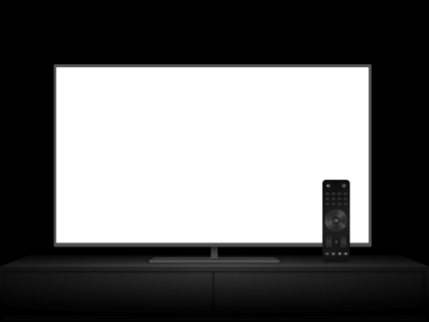

Pronto para assistir? Informe seu email para criar ou reiniciar sua assinatura
Aproveite na TV.
Assista em Smart TVs, PlayStation, Xbox, Chromecast, Apple TV, aparelhos de Blu-ray e outros dispositivos.

Baixe séries para assistir offline.
Salve seus títulos favoritos e sempre tenha algo para assistir.
Assista quando quiser.
Assista no celular, tablet, Smart TV ou notebook sem pagar a mais por isso.
Perguntas Frequentes
A Ozniflix é um serviço de transmissão online que oferece uma ampla variedade de séries, filmes e documentários premiados em milhares de aparelhos conectados à internet
Você pode assistir a quantos filmes e séries quiser, quando e onde quiser, sem comerciais – tudo por um preço mensal bem acessível. Aqui você sempre encontra novidades. A cada semana, adicionamos novas séries e filmes.
Assista à Ozniflix no seu celular, tablet, Smart TV, notebook ou aparelho de streaming por uma taxa mensal única. Os planos variam de R$21,90 a R$45,90 por mês. Sem contrato nem taxas extras.
Assista onde quiser, o quanto quiser e em um número ilimitado de aparelhos. Faça login com sua conta Ozniflix em ozniflix.com para começar a assistir no computador ou em qualquer aparelho conectado à Internet compatível com o aplicativo Ozniflix, como Smart TVs, smartphones, tablets, aparelhos de streaming e videogames.
Você também pode baixar a sua série favorita com o aplicativo Ozniflix para iOS, Android ou Windows 10. Use downloads para levar a Ozniflix para onde quiser sem precisar de conexão com a Internet. Leve a Ozniflix com você para qualquer lugar.
A Ozniflix é flexível. Não há contratos nem compromissos. Você pode cancelar a sua conta na internet com apenas dois cliques. Não há taxa de cancelamento – você pode começar ou encerrar a sua assinatura a qualquer momento.
A Ozniflix tem um grande catálogo de filmes, documentários, séries, e muito mais. Assista o quanto quiser, quando quiser.
Pronto para assistir? Informe seu email para criar ou reiniciar sua assinatura